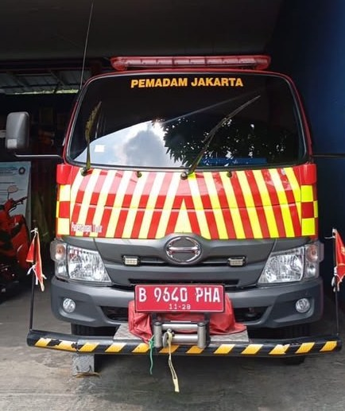
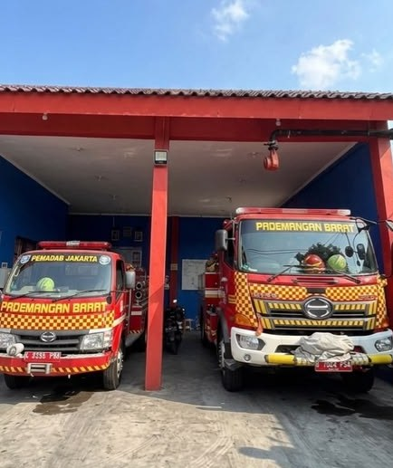
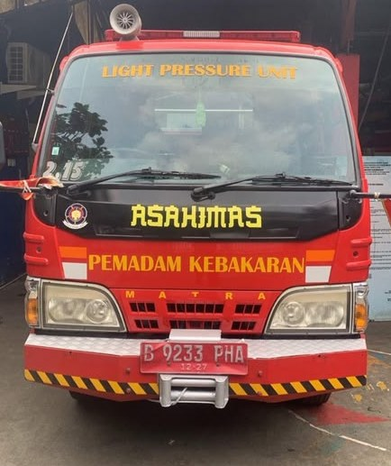

Dinas Penanggulangan Kebakaran
dan Penyelamatan Provinsi DKI Jakarta
Sektor Penanggulangan Kebakaran dan Penyelamatan Kecamatan Pademangan — media informasi digital seputar unit pompa, pemeliharaan perlengkapan, edukasi, dan dokumentasi temuan.
Menuju Menu Utama →


7
Unit Pompa
3
Titik Pos Siaga
4
Menu Informasi
24/7
Siaga Operasional
Tentang
Link Terpadu merupakan media informasi digital yang dikembangkan untuk memudahkan personel memperoleh informasi mengenai unit pompa, pemeliharaan perlengkapan, media edukasi, serta dokumentasi temuan secara cepat, mudah, dan terintegrasi dalam satu tautan.
Tujuan
Manfaat
👤 Bagi Personel
🏢 Bagi Organisasi